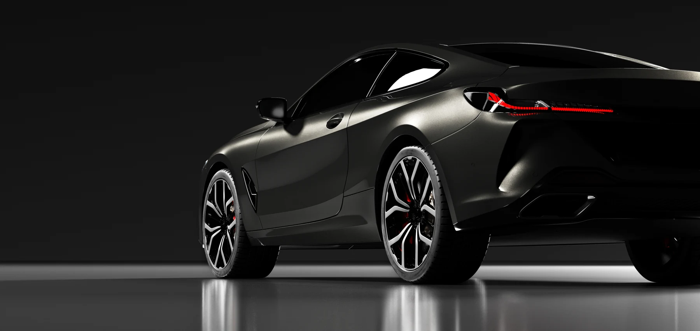

Constatări daune RCA
Ne ocupăm de constatarea daunelor și deschiderea dosarului RCA.
Verificăm actele și pregătim deschiderea dosarului, fără drumuri inutile.
Centru de constatări daune auto în București: ne ocupăm de constatare, dosarul RCA și reparație, iar tu primești mașină la schimb. Pentru dosarele RCA eligibile, plătește asigurătorul vinovatului, nu tu.
Preluăm constatarea, dosarul RCA și reparația. Ne ocupăm de acte și de comunicarea cu asigurătorul, iar tu îți continui drumurile.
Ne ocupăm de constatarea daunelor și deschiderea dosarului RCA.
Verificăm actele și pregătim deschiderea dosarului, fără drumuri inutile.
Vii cu mașina avariată și pleci cu o mașină de schimb din parcul nostru.
Pentru dosarele RCA eligibile, costul este decontat de asigurătorul vinovatului.
Mașina nu mai pornește? Ne spui unde ești, trimitem platforma.
Transportul la constatare se poate deconta din dosarul RCA, în condițiile aplicabile.
Pentru dosarul deschis prin noi, urmărim etapele reparației și te ținem la curent.
Monitorizarea este inclusă, fără tarif separat.
EXPERIENȚELE CLIENȚILOR
Recenzii reale de pe Google, de la clienții noștri.
Foarte mulțumit, totul sa mișcat foarte repede. În 4 zile a fost gata fără bătăi de cap. Recomand tuturor care au nevoie de servicii corecte și serozitate. Am primit și mașină la schimb chiar dacă era într-o zi de sâmbătă.Foarte mulțumit, totul sa mișcat foarte repede. În 4 zile a fost gata fără bătăi de cap. Recomand tuturor care au nevoie de servicii corecte și serozitate. Am primit și mașină la schimb chiar dacă era într-o zi de sâmbătă.
Reparat pe RCA intr-o saptamana, in urma unui incident minor. Plus masina de schimb, toate bune.Reparat pe RCA intr-o saptamana, in urma unui incident minor. Plus masina de schimb, toate bune.
Serviciu de exceptie, relatie cu clientii de exceptie, prompt si foarte serios! Recomand cu toata increderea pentru oricine, clar cel mai bun service de reparatii RCA din Bucuresti!Serviciu de exceptie, relatie cu clientii de exceptie, prompt si foarte serios! Recomand cu toata increderea pentru oricine, clar cel mai bun service de reparatii RCA din Bucuresti!
O firma foarte serioasa, profesionista cu persoane foarte amabile si competente care m-au ajutat sa rezolve totul in timp foarte scurt. Recomand cu incredere!!O firma foarte serioasa, profesionista cu persoane foarte amabile si competente care m-au ajutat sa rezolve totul in timp foarte scurt. Recomand cu incredere!!
Oamenii nu se întâlnesc întâmplător în viață iar orice întâmplare mai puțin fericită are ca scop noi relații, legături . De la o lovitură în trafic pe data de 2 iunie am ajuns la centru de daune deoarece vinovatul nu dorea să…Oamenii nu se întâlnesc întâmplător în viață iar orice întâmplare mai puțin fericită are ca scop noi relații, legături . De la o lovitură în trafic pe data de 2 iunie am ajuns la centru de daune deoarece vinovatul nu dorea să facem amiabilă ... long story ... aceștia fiind intr un final convinși ca ar fi cel mai corect așa și ca totul v a fi bine . Pe 16 iunie am ridicat mașina țiplă , am primit o mașină la schimb pe durata reparațiilor . Detaliile fac diferența ! Îi recomand ! F serioși și rapizi .
O experiență excelentă, de la primul apel până la ridicarea mașinii. Echipa a fost foarte promptă, au preluat rapid mașina, s-au ocupat de deschiderea dosarului de daună și m-au ținut permanent la curent cu statusul…O experiență excelentă, de la primul apel până la ridicarea mașinii. Echipa a fost foarte promptă, au preluat rapid mașina, s-au ocupat de deschiderea dosarului de daună și m-au ținut permanent la curent cu statusul reparațiilor. Mi-au oferit mașină de înlocuire pe durata reparațiilor, ceea ce a contat enorm pentru mine, și nu a fost nevoie să plătesc nimic în avans datorită decontării directe cu asiguratorul. Reparațiile au fost făcute la standarde înalte, cu piese omologate și atenție la detalii, iar mașina a arătat impecabil la livrare. Recomand cu încredere acest service și centrul de constatari daune pentru profesionalism, comunicare foarte bună și faptul că se ocupă de tot procesul, astfel încât tu să fii complet fără griji.
A două oară colaborez cu ei și n-am cuvinte de mulțumire cât de profesioniști sunt. Comunicarea nota 10 cu + răspunde oricând ai nevoie atât telefonic cât și prin mesaje, îți explică orice dacă ai nelămuriri. ...A două oară colaborez cu ei și n-am cuvinte de mulțumire cât de profesioniști sunt. Comunicarea nota 10 cu + răspunde oricând ai nevoie atât telefonic cât și prin mesaje, îți explică orice dacă ai nelămuriri. ...
Am intrat în biroul lor întâmplător și, fără nicio obligație m-au ajutat să completez amiabila pentru un accident pe care l-am avut. Si apoi am decis să apelez la ei pt a-mi facilita relația și comunicarea cu firma de…Am intrat în biroul lor întâmplător și, fără nicio obligație m-au ajutat să completez amiabila pentru un accident pe care l-am avut. Si apoi am decis să apelez la ei pt a-mi facilita relația și comunicarea cu firma de asigurări și repararea ...
Prompți, amabili si profesionisti. Am avut parte de asistenta de la inceput pana la sfarsit iar masina a fost gata in cateva zile. Rar mai intalnesti oameni seriosi in zilele noastre. Recomand cu incredere.Prompți, amabili si profesionisti. Am avut parte de asistenta de la inceput pana la sfarsit iar masina a fost gata in cateva zile. Rar mai intalnesti oameni seriosi in zilele noastre. Recomand cu incredere.
Totul de nota 10...constatare..mașină la schimb..rapiditate in tot..recomand cu mare dragTotul de nota 10...constatare..mașină la schimb..rapiditate in tot..recomand cu mare drag
Recomand cu incredere. In decursul a 4 ani de zile am fost lovit usor in trafic de 2 ori si de fiecare data am colaborat cu ei pentru dosarul de amiabila. ...Recomand cu incredere. In decursul a 4 ani de zile am fost lovit usor in trafic de 2 ori si de fiecare data am colaborat cu ei pentru dosarul de amiabila. ...
Am avut o experienta foarte buna in luna august 2024, cu niste elemente de vopsitorie la o Skoda Octavia.Au luptat si au reusit sa rezolve si micile neintelegeri cu asiguratorul. Masina a iesit super. Multumesc domnului…Am avut o experienta foarte buna in luna august 2024, cu niste elemente de vopsitorie la o Skoda Octavia.Au luptat si au reusit sa rezolve si micile neintelegeri cu asiguratorul. Masina a iesit super. [Mulțumiri adresate echipei; nume omise.]
Aceeași echipă, cu experiență din 2008 și mii de dosare. Știm unde se pot bloca lucrurile și preluăm pașii de la constatare până la mașina reparată.

CUM ÎNCEPEM
Începem cu un telefon. Ne spui ce s-a întâmplat, iar noi preluăm pașii dosarului.
MERGI MAI DEPARTE
Descarcă gratuit formularul de constatare amiabilă. Printează-l și păstrează-l în torpedou.
Descarcă amiabila și vezi exemplul
Ai nevoie de ajutor? Vorbim pe WhatsAppBucurești · Luni–vineri, 09:00–18:00
Harta se încarcă prin Google, doar cu acordul tău.
Strada Drumețului 53, București